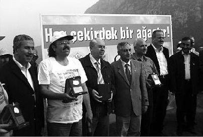

Bir düğün gecesi köyün erkeklerine namaz kıldırırken, köyü basan adamlar onlarca insanı kalaşnikoflarla tarar ve herkesi öldürürler. Genç Kazım da oracıkta ölür. Mardin'deki Bilge Köyü katliamı!
Katliam sonrası köylülerle yapılan soruşturma sırasında ortaya çıkar bu çocuğun köylüde yarattığı değişim. Köydeki üç öğretmen davetli oldukları hâlde düğüne katılmamıştır. Köyün sakat köpeği Dolly'i sahiplenip bakmış, tüm gençlere hayvan sevgisini aşılamış Kazım'ın bir tarikatla, cemaatle de ilişkisi yok. Anadan babadan işini iyi yapmayı, girişimci olmayı öğrenmiş. Geçtiğimiz ay 16 öğrencisi köyden kalkıp, başlarında köyün yaşlısı Osman Çelebi, Beypazarı'na Kazım Ozan'ın mezarının başına geldiler. Hüngür hüngür ağladılar. Onlarla anlaşabilmek için Kürtçe öğrenen Kazım Ağabeylerine dua ettiler.
Doktor olacaksanız böyle doktor, imam olacaksanız böyle imam olun.
Bu ülkenin aydın insanını dinden soğutmaya çalışmadan, her şeyi korku kültürüne dayatmadan öğretmeye çalışın. Ben okudum Kur'an-ı Kerim'i, cehennemden çok cenneti anlatıyor. Siz Cuma'ya geldiğimde bana hep cehennemi anlatıyorsunuz.
Camiye mi geldik, Burger King'e mi belli değil. Ateş seni çağırıyo!
Sevgi kültürü şahane bir şeydir.
1950'li yıllar, Fatih Camisi imamı teravihten sonra büyüklere dermiş ki: "Şimdi dışarıda yirmi dakika bekleyin, çocuklar biraz camide oynasınlar." Çocuklar caminin içinde oynar dururlarmış. Böyle sever çocuklar dini. Korkutularak değil.
Ben size içten bir şey söyleyeyim mi?
"Söylediğin her şey içten zaten" diyen var ya, yerim senin yanaklarını.
Bu ülkenin her köyünde, müfredatı sallamayıp müfettişlerden, rüşvetçi bürokratlardan korkmayan böyle çilekçi bir öğretmen, bir de böyle sevgi dolu imam olsun, ilin valisini de rahmetli Recep Yazıcıoğlu ya da kendisine verilen yüz bin dolarlık ödülü okul yapımına bağışlayan Trabzon Valisi Nuri Okutan yapın. Kasabanın kaymakamı da fakir çocuklara hayallerini yazdıran, sonra da 200 çocuğun hayalini tek tek gerçekleştiren Of Kaymakamı Tuncay Sanel olsun, şehrin belediye başkanı Profesör Yılmaz Büyükerşen, politikacısı da Adnan Kahveci olsun. Ülke başka bir ülke olurdu.
Aslında sadece öğretmenle imam adam olsalar emin olun, o bile yeterdi.
Genç çocuk, öğretmeninin ısrarıyla İstanbul'a eczacılık okumaya gelir. Sirkeci'de bir otel bulur, aylığı 100 lira. Fakat çok para, bir yandan okumaya çalışır, bir yandan masraflarını karşılamaya. Bu arada otelin nasıl işlediğini de öğrenir. Bir gece geç saat, bir bakar müşteriler koridorlarda, kızgın, bağıranlar falan. Kaloriferler yanmadığı için otel buz gibi olmuştur. Genç Ataman iner aşağıya, kaloriferi yakması gereken görevli üşütmüş, yorgan döşek yatıyor. Kaloriferi yakmak diğer personelin görevi olmadığı için hiçbiri üstünü kirletmek istemez. Ataman girer kalorifer dairesine, alır küreği, kazana kömür atmaya başlar, kazan tutuşur. O sırada içeri bir adam girer.
– Kimsin sen?
Ataman üzerinde atlet pijama, yüzü gözü kömür içinde.
– Müşteriyim.
– Ne yapıyorsun burada?
– Görevli arkadaş hastalanmış, müşteriler isyan çıkarıyordu, ben de kaloriferi yakıyorum.
– Peki.
Ataman işini bitirince odasına çıkar, yıkanır, yatar.
Ertesi gün resepsiyondan odayı ararlar:
– Otelin sahibi sizi çağırıyor.
Otel sahibinin odasına girdiğinde bir bakar, kazan dairesinde gördüğü adam.
– Nerede okuyorsun?
– Eczacılık fakültesinde.
– Bu otelde ne kadar kalacaksın?
– Dört yıl.
– Oğlum dört yıl bu otele para ödemeyeceksin, burayı artık kendi evin bil.
Genç Ataman, "Ömrüm boyu insanlara karşılık beklemeden iyilik yapmaya çalıştım ve hep karşılığını aldım. Bulunduğum yere hep bir yenilik getirmeye çalıştım, o girişimciliğin de karşılığını aldım" der. Küçük Ataman, bugün dünyanın elli ülkesine ıslak mendil, krem gibi hijyen malzemeleri ihraç eden bir Türk markasının sahibi. Sekiz ülkede pazar lideri, girişimciliğini aynen devam ettiriyor. O gün otelde çalışıp da kazan dairesine adım atmayanların hepsi bir yerlerde sürünüp aldıkları maaşlardan şikâyet ediyorlardır.
Bir kamu kuruluşunda liderlikle ilgili bir konuşma yapmam istendi. Biri el kaldırdı, adı Kemal'miş:
– Devlet şöyle kötü, böyle kötü. Siyasi gücün yoksa yükselemezsin, torpil var, rüşvet var, iş yapılmıyor.
– Kemal Bey'in söylediklerini bu salonda bilmeyen var mı? diye sordum.
Yok.
– Hepimiz bu haltları biliyoruz. Kemal Bey, eğer devlet çalışanı olarak "Yanlışlıklar bunlar, düzeltmek için de bunları yapalım" diye koşturan bir adamsanız, etrafınızdakiler çok şanslı, siz de çok iyi bir adamsınız. Ama bütün gün bunlardan sadece şikâyet ediyor ve düzeltmek için koşturmuyorsanız Allah etrafınızdaki herkese sabır ve kolaylık versin.
Allah aşkına aranızda bugün yaşadığımız sorunları bilmeyen var mı? Adım atıyor musunuz, atmıyor musunuz; tüm fark burada.
Düzeltmeyi başaramayabilirsiniz, ama en azından örnek olursunuz. Küçük Ahmet'i bir ustanın yanına verirler, iş öğrensin diye. Usta deli mi, dâhi mi belli değil; devamlı uçmaya çalışan bir adam. Etraftaki tüm ustalar da bu ustayla dalga geçerler. Bir gün kanat takıp atlar usta, çırağının gözleri önünde düşer ölür.
Ustayı tanımıyorsunuz ama çırağı tanıyorsunuz:
Hezarfen Ahmet Çelebi.
Wright kardeşlerden önce uçakla uçmaya çalıştılar, düşenler varsa onlar da Wrong kardeşlerdir kesin. Büyük Osmanlı denizcisi Kemal Reis vardır, hiçbiriniz tanımazsınız. Derya gibi bilgisi olup bildiklerini de öğreten bir adamdı. Denizciliği, haritacılığı o öğretti yeğenine, girişimciliği ve mesleği genç yeğenine örnek oldu.
Kemal Reis'i kimse tanımaz, ama yeğeni Piri Reis'i dünya tanıyor. O olmasa Piri Reis de olmazdı.
Siz de bazen başaramayabilirsiniz, ama en azından örnek olursunuz.
Bunun adı zaten başarmak.
1961 yılında askerden dönen genç Firuz babasına der ki:
"Baba askerde gördüm, bisküvi çok satılıyor. Biz un fabrikasını bisküvi fabrikasına çevirelim, geleceği parlak bu işin!"
"Tamam" der baba. Firuz Kanatlı gider, fabrikanın adını Eti olarak tescil ettirir 1961'de. O dönem ve öncesinde nice un fabrikası sahibi askerliğini yaptı ve nasıl bisküvi satıldığını gördü, ama genç Firuz adımı atabildi.
Ahmet Nacar, benim en eski arkadaşım. 6 yaşından beri kankayız. Sarı Siyah'ı beraber yazdık. Bir ilçemizin hastanesine göz doktoru olarak tayini çıktı. Bir süre sonra görmüş ki ilçede bugüne kadar göz hekimlerinin açtığı hiçbir muayenehane tutunamamış. İlçenin yerli iki doktoru var. Halk da bu isim yapmış iki hemşerisinin muayenehanelerine gidiyor. Bugüne kadar gelen hiçbir göz doktoru muayenehanesini işletememiş, bir çıkış yolu da bulamamış. Altı ay sonra tayin isteyip gitmişler.
Ahmet muayenehanede sinek avlarken, yaşlı bir köylü amca geliyor. Ahmet içten, iyi bir çocuktur. Amcayla çaylarını içmiş, sohbetlerini yapmışlar. Muayeneden sonra telefonunu, köyün adresini almış. Ara sıra, diğer iki doktorda sıra olduğunda, muayene olamayan köylüler gelmeye başlamış.
Bir gün muayenehanede gene sinek avlarken sala sesi duyulmuş: "Bilmem ne köyünden bilmem kim, hakkın rahmetine kavuşmuştur. Öğle namazı sonrası şu mezarlıkta toprağa verilecektir."
Ahmet'in de işi gücü yok, aklına gelmiş, açmış defteri bakmış o köyden iki hastası var. "Ağabey işim gücüm yok, bir de bizde adettendir, vefattan sonra mutlaka taziye telefonu açılır" diye düşünüp aramış hastalarını: "Başınız sağ olsun, Mehmet Amca vefat etmiş."
"Sağ olasın Dohtur Bey."
"Bir baktım cenazeden sonra oralı köylüler bana toplu ziyarete geldiler, sohbet ettik, ahbaplık kuruldu."
Merkez Camisi'nin minaresi Ahmet'in muayenehanesinin dibinde, her saladan sonra Ahmet iş edinmiş vefatın olduğu köyü arıyor. Köylüler çok memnun oluyorlar böyle vefalı, değer bilen bir doktorları olduğu için, Ahmet çok memnun hastalarının ona gösterdikleri sevgi için. Ahmetim salalar sayesinde o ilçede, onlarca yıl tutunabilen tek yabancı doktor oldu.
Demek ki her problemin aslında bir çıkışı var. Öteki doktorlar "Bu ilçede bir şey olmaz arkadaş" deyip çekip giderken Ahmetim başardı.
Siz şimdi şaşırmışsınızdır. Kitabın bu sayfası geldi, hâlâ size "forwardlanan e-mail" yabancı öykülerden yok, hâlâ Amerika'dan örnek yok. Bütün örnekler Türkiye'den. Anlatılanların hepsi bu topraklar kokuyor. Kusura bakmayın, böyle de gidecek elinizdeki kitap. "O beyzbol topu, James'in bütün hayatını değiştirdi", "Obama böyle başardı" gibi örnekleri göremeyeceksiniz. Olur da buradan bir hikâye size elektronik postayla ulaşırsa bilin ki Şerif Hoca internetten almadı, internet Şerif Hoca'dan aldı.
Şimdi size denizyıldızının hikâyesini anlatayım. :)
Yuh artık değil mi?
Ama denizyıldızı hikâyesi olmadan kişisel gelişim kitabı olmaz ki.
Girişimciliğin önündeki en büyük engel "Bizde o imkânlar yok ki", "O yaptı da ne oldu?", "Adam yapıyorsa arkası vardır, torpili vardır oğlum" gibi yalan dolanlardır.
İki travesti yol kenarında bekliyorlar, biri küçük yerden gelmiş İstanbul'a, öteki sormuş:
– Nasıl sizin orada işler?
– Vallah döviyler, söviyler, paramızı vermiyler, perişanlık. Sefaletin bini bir para. Sizde nasıl?
– Aaa, İstanbul'da öyle değil, sosyeteden sayılırız, arabayla alıp arabayla bırakırlar. Yaş günlerimizde ararlar. Müşterilerimizle en lüks restoranlara, kafelere gideriz. Bir dediğimizi iki etmezler, el üstünde tutuluruz.
Öteki sessizce dinlemiş.
– Gardaş sizdeki sosyal imkânlar bizde olsa, bizim şehrin alayı travesti olur vallah.
Olayı sosyal imkâna bağlamayalım, sende cevher olacak arkadaş.
Manisa'da bir doktor, ürolog Fahrettin Er, hepimizin attığı meyve çekirdeklerinin aslında ağaca dönüşebileceğini düşünür ve bir proje başlatır.
"Her çekirdek bir ağaçtır."

Projeyi herkese duyurur, bir web sitesi açar, "Yediğiniz meyvelerin çekirdeklerini atmayın, üç gün gazetenin üzerinde kurutun ve bize yollayın" der.
Tam on milyon meyve çekirdeği toplanır. Bu çekirdekler kampanyayla Spil Dağı'na dikilir. On milyon meyve çekirdeği, yüzde biri tutsa yeter. Projenin toplam maliyeti on bin TL.
Devlete dört milyar dolar borç takıp BDDK'ye devredilen bir bankanın davası kapansın diye bir eski bakanın sportif oğlunun yediği rüşvet 20 milyon dolardı. Velet 20 milyon dolar aldı, devlet dört milyar dolar kaybetti. Gazetelerde okumadınız değil mi? Çünkü şu anda Ergenekon'u yazıyorlar. Bunu yazamazlar, sıkar biraz. Oysa hepsi biliyor. Ben nereden biliyorum, emniyetten dostlarım söyledi. Onlar niye mi bir şey yapmıyor, Ergenekon'u takip ediyorlar. Bu rüşvet paralarını aklamanın yolu nedir dersiniz? Ya turizme yatırırsınız ya da futbol kulüplerinde aklarsınız. Anladınız siz onu.
Bu proje sadece on bin TL tuttu.
Manisa'daki Orman Müdürü'yle konuşmuşlar, "Biz projede yer almadık, çünkü yasaya uygun değil. Ayrıca çekirdeklerin helikopterle atılan bölümünün çoğu tutmaz" demiş. % 90'ı tutmasa bir milyon ağaç eder, % 99'u tutmasa yüz bin meyve ağacı eder. Ey, Orman Müdürü! Hayatın boyu on bin ağaç diktin mi?
Ormana meyve ağacı dikmeye çalışmak yasal değil. Komediyi görüyor musunuz? Aslında Dr. Fahrettin Er gibilerini içeri atmak lazım, böyle yasal olmayan işler yaptıkları için.
Ortalık, ülkenin ormanları cayır cayır yanarken, "Ormanı bekçi değil, sevgi korur" levhaları asmaktan başka bir iş yapmayan bu adamlara ve politikacıların yasal iş yapan çocuklarına kalırdı o zaman.
12 Eylül dönemi polisler bir eve baskın yapıyorlar. Üniversiteli çocuklar var odada.
– Komünist misiniz siz?
– Değiliz abi, vallahi billahi değiliz.
Evi arıyorlar, cidden Das Kapital, solcu dergiler falan. Polis bir bakıyor duvarda Karl Marx'ın çerçeveli resmi.
– Kim ulan bu?
Sessizlik... Çocuklardan biri atlıyor:
– Dedemin resmi.
– Böyle nur yüzlü deden var, utanmıyor musun komünist olmaya!
Bu doktorlar da utanmıyorlar ağaç dikmeye, Allah'tan Orman Müdürü boşluğu tespit etmiş de projede yer almamışlar. Ama son memur eyleminde iş yavaşlatmışlardır, artık şu anki işlerini daha nasıl yavaşlatacaklarsa. Dünyada kriz var; Romanya, devlet memurlarının beşte birini işten çıkardı. Polonya, memur maaşlarını düşürdü, Yunanistan düşürüyor. Türkiye'de işsizlik zirvede, herkes işsiz. Memurlar Türkiye'de maaş artışı, sosyal hak için iş yavaşlatma eylemi yapıyor. Aslanlarım benim. Allah sizi, bıyıklarınızı ve kravatlarınızı başımızdan eksik etmesin. 45 yaşında emekli olun, bütün gün yatın ve şikâyet edin.
Dostlar, rüyalarınız gerçek olsun ister misiniz?
E, o zaman, önce bir uyanın.
Hoş kalktınız.[4]